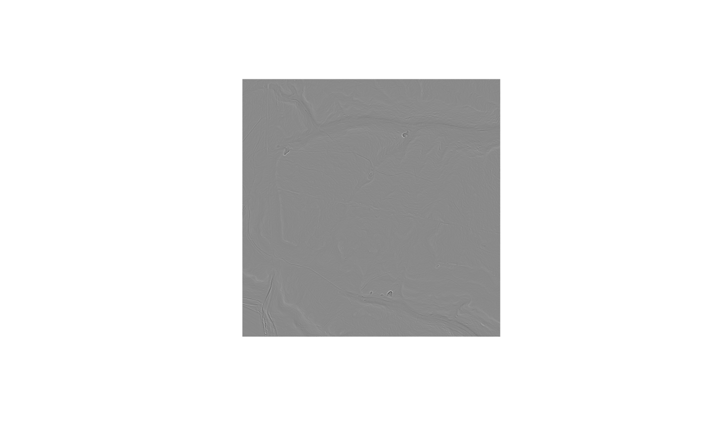

Removes noise from a surface while leaving breaks of slope sharp. An ordinary averaging or Gaussian filter cannot tell a noisy cell from a terrace edge and rounds off both, which is self-defeating here: the edges are what most of these metrics exist to find.
Usage
rvt_smooth(
dem,
out_path = fs::file_temp(ext = "tif"),
radius = 5,
norm_diff = 15,
iterations = 3,
max_diff = 0.5,
tile_size = NULL,
threads = rvt_threads(),
overwrite = FALSE,
progress = FALSE
)Arguments
- dem
path to a DEM, or a vector of paths forming a mosaic (see
rvt_mosaic()); mosaics are read across file boundaries, so tiles do not produce seams- out_path
output GeoTIFF path (default: a temp file)
- radius
how far the normal filter reaches, in map units (metres, normally; default 5)
- norm_diff
angle in degrees beyond which neighbouring ground is treated as a different surface and not averaged across (default 15)
- iterations
elevation-update passes (default 3)
- max_diff
largest change any cell may undergo, in elevation units (default 0.5)
- tile_size
tile edge in pixels; NULL picks a size targeting roughly 256 MB per working matrix
- threads
C++ threads (see
rvt_threads())- overwrite
recompute even if
out_pathexists- progress
report per-tile progress
Details
Worth reaching for when a DEM is speckled - gridded finer than the point
density really supports, or affected by flight-strip misalignment - and
before rvt_curvature(), rvt_log() or rvt_geomorphons(), all of which
amplify high-frequency noise by construction.
How it works
The algorithm is Sun, Rosin, Martin and Langbein's (2007), as used by
WhiteboxTools' FeaturePreservingSmoothing. It smooths the surface
normals rather than the elevations:
A unit normal is computed per cell, from the same central differences
rvt_slope()uses.Each normal is replaced by a weighted average of those within
radius, with the weight falling to zero once a neighbour's normal differs by more thannorm_diffdegrees. Across a break of slope the two sides do not see each other at all, so the edge survives, while noise - small random deviations well inside the threshold - averages away.Elevations are then nudged repeatedly towards agreement with those smoothed normals: each neighbour's plane implies a height for this cell, and the cell moves to their mean.
That last step works on immediate neighbours only, not the whole radius
window - the radius belongs to the normal filter. Letting it reach further
lets cells on opposite sides of a scarp pull on each other and smears the
very edge the normal filter preserved.
Total movement is capped at max_diff, so no cell can drift far from
measured ground however many iterations are run. Tiles overlap by the full
reach of the three stages, so the result does not depend on tile_size.
Tuning
norm_diffis the one that matters. It is the angle, in degrees, beyond which two pieces of ground are treated as belonging to different surfaces. Low values (5-10) preserve almost every edge and remove only the finest noise; high values (25-40) smooth much harder and start rounding real breaks. The default 15 follows WhiteboxTools.radiussets how far the averaging reaches, in map units. Larger removes more noise and costs proportionally more - the window is circular, so cost grows with the square.iterationsrepeats only the elevation step, against normals that are filtered once. Three is usually enough; more mostly runs intomax_diff.max_diffis a safety rail in elevation units. Lower it if you want to guarantee the surface stays close to what was measured.
References
Sun, X., Rosin, P.L., Martin, R.R. and Langbein, F.C. (2007) Fast and effective feature-preserving mesh denoising. IEEE Transactions on Visualization and Computer Graphics 13(5), 925-938. doi:10.1109/TVCG.2007.1065
See also
rvt_fill(), which closes gaps rather than removing noise. Run it
first: smoothing cannot sensibly average across a hole.
Examples
dem <- system.file("extdata", "dtm1.tif", package = "rvtr")
# the usual preparation, as a pipeline
dem |> rvt_fill() |> rvt_smooth() |> rvt_curvature() |> rvt_plot()
